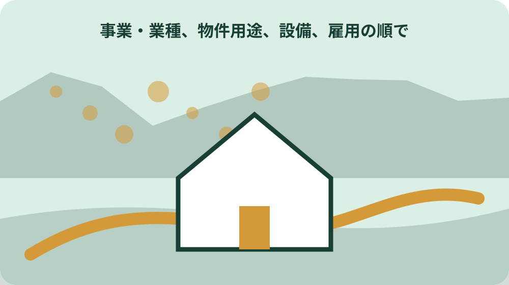

先に結論を確認する
この記事の答え：法人設立・設置届、登記簿謄本の写し、定款の写し、提出控えを先頭に置きます。続いて事業年度、森町内の事務所等を設けた日、資本金等、町内従業者数を記録し、初回の法人町民税申告期限、申告控え、納付証跡へつなぎます。
森町で最初に照合する条件：設立登記上の本店だけで判断せず、森町内で人的設備、物的設備、事業の継続性を備える事務所等に当たるか、開設日を含めて町民税係へ確認する。
結論は設立届から異動届まで一件ファイルでつなぐ
森町内で法人を設立したり、町外法人が事務所等を設けたりした後は、法人設立・設置届だけを提出して終わりにしません。一件ファイルの先頭へ届出控えと添付資料を置き、初回事業年度の法人町民税申告、納付、後日の法人名・所在地・代表者・事業年度等の変更まで、同じ法人番号と管理番号でつなぎます。
ファイルの見出しは、基礎情報、設立・設置届、申告期限、申告控え、納付証跡、異動履歴の六つに分けます。申告書と納付記録を別の担当者が持つ会社でも、原本の保管先と電子データの場所を索引へ記します。誰が見ても、届出済み、申告済み、納付済みという三つの状態を別々に確認できる形にします。
この記事は会社設立全般、営業許可、入札参加、補助制度を説明するものではありません。森町の法人町民税に関する一連の記録だけを扱います。税額や事務所等への該当は個別条件で変わるため、公式資料から確定できる範囲と、町民税係や税理士へ確認する範囲を分けます。
表紙には、現在の処理状態と次の一手を一行で書きます。例えば『設立・設置届受付済み、初回申告期限確認中』のように、済んだ工程と未確認の工程を同じ語で表しません。税理士へ渡している資料、会社に戻った控え、まだ受領していない結果も三つに分け、担当者が不在でも現在地を確認できる状態にします。
法人と森町内事務所の基礎情報を最初に固定する
基礎情報票には、法人名、法人番号、本店所在地、代表者、資本金等、事業年度、森町内事務所等の名称・所在地・電話、営業開始日、町内従業者数を記します。登記事項証明書、定款、賃貸借契約、開設時の社内決定資料で確認した日付を併記し、似た日付を一つにまとめません。
特に、設立登記日、本店移転登記日、森町内事務所を実際に設けた日、営業開始日は別欄にします。森町公式FAQは、事務所等への該当を人的設備、物的設備、事業の継続性という三要件で説明しています。登記上の住所だけで森町の事務所等に当たると即断せず、働く人、設備、継続性の実態を町民税係へ示します。
基礎情報票は申告のたびに上書きせず、事業年度ごとの末日時点を残します。森町公式では、均等割の資本金等と従業者数は原則として事業年度末日で判定すると案内されています。設立時の人数だけを翌期へ流用せず、末日時点の町内従業者数を給与資料等から確認し、算定根拠の保管場所を記します。
設立・設置届と添付二点を受付控えへまとめる
森町は、法人を町内に設立したとき、または事務所等を設置したときに、法人設立・設置・転入届を提出するよう案内しています。添付書類は登記簿謄本と定款で、どちらも写しでよいと届出一覧とFAQに明記されています。現行様式は森町の申請書ページから取得し、取得日を付けます。
届出ファイルには、提出した届出書、登記簿謄本の写し、定款の写しを一組にし、提出日、提出方法、受付確認日を書きます。電子提出なら送信データと受付結果、窓口提出なら控えの有無、郵送なら送付記録と到達確認を分けます。提出用に加工したPDFと、元の証明書ファイルを同名で上書きしません。
法人設立・設置届の提出は、初回の法人町民税申告や納付と同じ手続ではありません。届出を受け付けられたことを、将来の申告額や納付完了の証明へ置き換えないよう、ファイルの進行欄を三段にします。設立・設置届の受付番号または確認記録、初回申告の受付結果、納付証跡がそろうまで案件を閉じません。

事務所等に当たる日を登記日と分けて確認する
森町公式FAQによると、事務所等には人的設備、物的設備、事業の継続性が必要です。そこで事業が行われていれば、直接収益が生じていない場合も事務所等に該当し得る一方、明らかに短期間の現場事務所など該当しない例も示されています。名称が『営業所』か『倉庫』かだけで課税関係を決めません。
森町内事務所の開始日についても、建設着手、工事完了、営業開始の三つを分けます。同FAQは通常、営業開始時点で物的・人的要素を満たすと説明していますが、すべての法人へ一律に当てはめる日付ではありません。鍵の引渡し日、従業員配置日、設備稼働日など実態資料をそろえ、個別確認した結論を記録します。
町外本店から森町で活動する場合は、本店登記と実際の活動場所が違うことがあります。森町は、登記に使っただけで継続的な業務を行わない場所より、実際に営業活動をする森町で課税される例をFAQで示しています。具体的な会社の実態を伝えず、例文だけで提出先を決めないよう、拠点ごとの人・設備・業務を表にします。
初回事業年度と申告期限を日付で置く
基礎情報がそろったら、定款と登記事項から最初の事業年度の開始日・終了日を転記します。森町は確定申告の期限を、事業年度終了日の翌日から原則2か月以内と案内しています。『決算月の2か月後』という略し方では月末や延長の扱いを誤り得るため、予定表には具体的な終了日と確認した期限日を置きます。
事業年度が1年で中間申告の対象となる場合、森町公式は事業年度開始から6か月を経過した日から2か月以内という期限を示しています。ただし、法人税の中間申告義務や法人の種類によって扱いが異なる説明もFAQにあります。初年度だから不要、赤字見込みだから不要と独自判断せず、法人税側の情報と合わせて確認します。
一件ファイルの期限表には、決算資料完成日、国の法人税額確認日、法人町民税申告データ完成日、社内承認日、送信または提出日、納付日を分けます。申告期限日に計算を始める日程ではなく、補正や電子証明書の不具合にも対応できる余白を置きます。期限延長が関わる場合は、根拠と承認状況を個別に確認します。
初年度が12か月未満なら、設立から最初の決算までの日数と、森町内事務所等を有した期間を同じ数字として扱いません。登記日、事務所等の開始日、事業年度開始日が一致するとは限らないためです。各日付の根拠資料を期限表の脚注へ結び、月数按分や申告期間の判断は町民税係や税理士へ確認した内容を残します。
均等割と法人税割の根拠欄を別に作る
森町の法人町民税は、資本金等の規模などに応じる均等割と、国へ申告した法人税額を基礎とする法人税割で構成されます。一件ファイルでは二つを別の計算根拠欄にします。合計額だけを保存すると、翌年に資本金、従業者数、町内事務所の月数、法人税額のどこが変わったか追えません。
均等割の欄には、事業年度末の資本金等、森町内従業者数、町内に事務所等を有した期間を記します。森町は12か月未満の期間について月数按分すると案内しています。月数の数え方や事務所開始日の認定は記事から確定せず、具体的な開始・廃止日を示して確認します。根拠資料名と作成部署も残します。
法人税割の欄には、国へ申告した法人税額、森町公式で確認した税率、複数市町村に事務所がある場合の分割情報を置きます。森町公式掲載の税率は6.0パーセントですが、申告対象期間に適用される率を行動時に再確認します。税率だけを前年ファイルからコピーせず、参照した公式ページの取得日を記録します。
赤字でも申告と均等割確認を止めない
初年度の損益が赤字でも、法人町民税ファイルを未処理のまま閉じません。森町公式FAQは、赤字で国の法人税額が0円となり法人税割がかからない場合も、法人町民税の申告が必要であり、均等割の申告と納付が必要と説明しています。利益がないことと、地方税の手続がないことを同じにしません。
赤字期のファイルには、決算書、国の法人税申告に関する資料、法人町民税の均等割判定資料、申告控え、納付証跡を並べます。『0円』というメモだけでは、法人税割が0円なのか、納付総額が0円なのか、未計算なのか区別できません。税目と内訳を明記し、均等割の額は個別条件から確認します。
休業状態で売上がない場合も、休業届を出したから自動的にすべての申告がなくなるとは決めません。森町の届出一覧は、一時休業時に法人解散・事業所廃止・休業届、事業概況書、税務署と財務事務所へ提出した休業届の写しを挙げています。休業開始日、事務所等の状態、申告要否を別々に確認します。
申告データと納付証跡を一組で閉じる
森町は法人町民税を、法人が自ら課税標準と税額を計算し、その内容を申告するとともに納付する申告納付方式と説明しています。申告データを送っただけでも、納付だけを済ませただけでも一件は完了しません。申告受付結果、申告額、納付日、納付額、納付方法を照合します。
森町の申請書ページには、法人町民税の確定申告書である第20号様式と、法人町民税納付書が別々に掲載されています。紙で行う場合は使用した様式の版、提出先、受付控えを保存し、納付書の領収情報を同じ事業年度のフォルダーへ収めます。別年度の納付書を誤って組み合わせないよう、年度と法人番号で照合します。
電子納付の場合も、画面上で操作が完了したことと、預金口座等から正しい額が納付されたことを分けて確認します。受付通知、納付情報、取引結果、会計仕訳を結び、取り消しやエラーがなかったかを確認します。税理士へ委任する場合は、申告控えと納付結果を誰が会社ファイルへ戻すかを事前に決めます。
照合表には申告書記載の納付税額、電子または紙の納付額、会計帳簿の計上額を三列で置きます。差があれば、修正申告、還付、未納、入力誤りなどのどれかを決めつけず、確認先と回答を追記します。銀行明細だけでは対象税目や事業年度が分かりにくい場合があるため、受付番号や納付情報を同じ行へ結びます。
紙提出とeLTAXの受付結果を同じ粒度で残す
森町はeLTAXで、法人住民税の確定申告、中間申告、修正申告、法人設立・設置届、異動届、納付ができると案内しています。電子化する場合も、一つの操作ですべての手続が自動完了すると考えません。手続名ごとに送信日時、対象事業年度、提出先、受付結果、納付結果を記録します。
eLTAX利用には、対応するパソコンや電子証明書などの準備が必要と森町は説明しています。初回期限の直前に利用開始を決めず、利用者ID、電子証明書の有効性、代理人の権限、対象税目と提出先を事前に確認します。地方税共同機構のガイドも、ポータルセンタが申告データ等を受け付け、該当する地方公共団体へ送信する仕組みを説明しています。
紙と電子の保管項目をそろえると、担当交代後も追跡できます。紙なら提出書、添付、受付控え、領収情報、電子なら送信データ、添付、受付結果、納付結果です。ファイル名には法人番号、事業年度、手続名、送信日を入れます。メール受信だけを正式な受付結果とせず、eLTAX内のメッセージ等を確認します。
名称・所在地・代表者・事業年度の変更を追記する
設立後に法人名、本店所在地、代表者、事業年度、資本金などが変わったら、一件ファイルの基礎情報を単に上書きしません。変更前、変更後、変更日、登記日、証明資料、森町への提出日を異動履歴へ追加します。森町はこれらの変更時に法人異動届と、異動事項を証明できる書類を求めています。
特別徴収の所在地・名称変更届を出した場合でも、法人町民税の異動届が自動的に済むわけではありません。森町公式FAQは、法人名変更を住民税特別徴収担当へ届けた後も法人町民税の法人異動届が必要と明記しています。税務課への提出だから一つで兼用できると考えず、税目・様式ごとに受付を確認します。
町内事務所の閉鎖、法人の解散、休業も同じ履歴へ入れますが、名称変更と同じ様式ではありません。森町の届出一覧で該当様式と添付を確認し、閉鎖日、解散日、休業日を区別します。解散から清算結了まで申告が必要とのFAQもあるため、届出提出日だけで翌期の申告予定を削除しません。
異動後の基礎情報票は新しい版を作り、旧版の有効期間を閉じます。代表者変更と本店移転が別の日なら、一件の異動として丸めず日付ごとに行を分けます。異動届へ添付した証明資料と、登記前後の情報が一致するかを確認し、次回申告データに新情報が反映されたことまで年次更新表で追います。
大石の視点：税の一件ファイルを物件資料と分ける
ここまでの届出様式、課税の構成、申告期限、eLTAX対応は森町と地方税共同機構の公的資料に基づく事実です。ここからは私、大石浩之の実務上の提案です。法人町民税の一件ファイルは、店舗や事務所の賃貸借契約、建物図面、許認可資料と同じ箱へ無造作に混ぜず、相互の索引だけを結びます。
私は、物件を借りた日、鍵を受け取った日、従業員が勤務を始めた日、営業開始日を別々に残すことが大切だと考えます。町内事務所等を有した期間や異動時期を後から確認するとき、契約書の日付だけでは実態が分からないことがあるためです。ただし、どの日が税務上の開始日かは私見で決めず、資料を示して町民税係へ確認します。
会社がまだ小さい時期ほど、代表者一人の記憶に依存しがちです。売上や利益の話より前に、届出控え、事業年度、申告期限、納付証跡を一覧にすれば、赤字期や担当交代時も抜けを発見できます。これは不安を煽る資料ではなく、会社と家族が森町で事業を続ける選択肢を落ち着いて管理する記録だと考えます。
年次更新表で次の申告と変更確認へつなぐ
初回の申告と納付が終わったら、一件ファイルの表紙に次年度の予定を置きます。事業年度開始・終了、決算資料完成、申告期限、eLTAXの電子証明書期限、担当者、税理士連絡日を記し、法人名、所在地、代表者、事業年度、資本金、町内事務所の変更有無を四半期ごとに確認します。
年度末には、基礎情報票の町内従業者数と資本金等を新しい資料で更新し、旧年度を保存します。申告額が前年と違うときは、利益だけでなく、均等割区分、町内事務所の月数、分割基準、税率や制度変更のどこが影響したかを確認します。公式ページの更新日と取得日も記し、古い税率表を根拠にしません。
最終チェックは、設立・設置届の受付、初回申告の受付、納付証跡、異動履歴、次回期限の五点です。空欄には推測値を書かず、確認担当と期限を書きます。法人町民税の一件ファイルが整えば、入札や営業許可の別ファイルと混同せず、森町での法人税務だけを年次で追える状態になります。